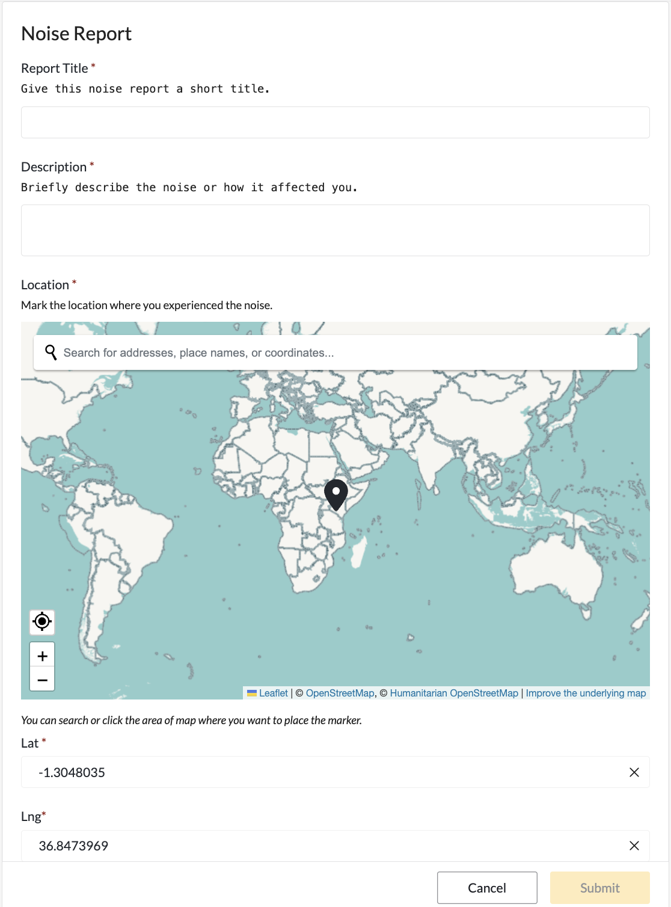
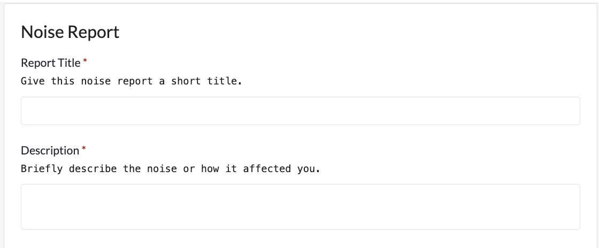
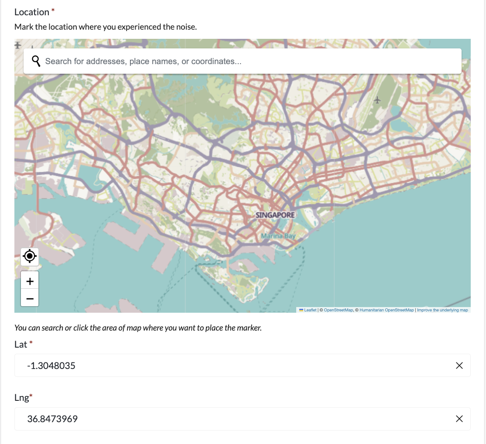
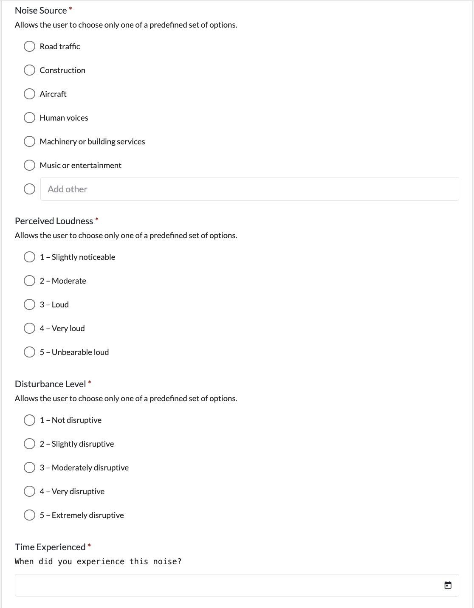
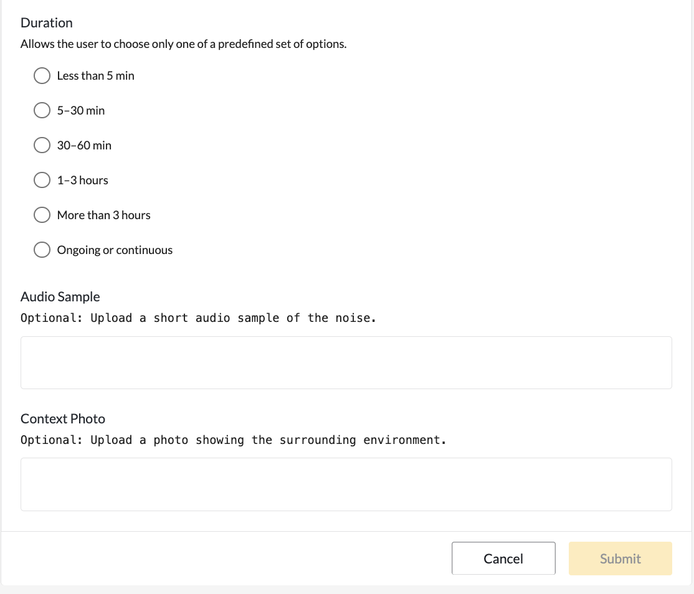

COMMUNITY
NOISE MAP.
Mapping how urban noise is
experienced in everyday life.
WHERE DOES NOISE
BECOME DISRUPTIVE?
The same sound.
A different experience.
From busy roads to neighbourhood construction, sound is part of everyday life in Singapore. But when does it become disruptive? Community Noise Map invites people to document the sounds they encounter and describe how those sounds affect them.
By bringing location, source, perceived loudness and disturbance together, the project explores how noise is experienced across everyday settings. These shared observations can open conversations about our urban environment.
COMMUNITY OBSERVATIONS / SINGAPOREWHO MAKES THE MAP?
Individual observations. A collective urban picture.
The map is built from individual observations, but its value comes from combining them into a shared picture of urban noise.
CONTRIBUTORS
- Residents
- Students
- Workers
- Commuters
PROJECT TEAM
Organises and reviews submissions to maintain a consistent community dataset.
SHARED MAP
Combines individual observations by location, time, source, loudness and disturbance.
USERS
- Local communities
- Urban planners
- Urban and environmental managers
FROM EXPERIENCE
TO SHARED DATA
- MARK LOCATION
- IDENTIFY SOURCE
- RATE LOUDNESS
- RATE DISTURBANCE
- SUBMIT
THE OBSERVATION RECORD
- Report Title
- Description
- Location
- Noise Source
- Perceived Loudness
- Disturbance Level
- Time Experienced
- Duration
- Audio Sample
- Context Photo
PERSONAL PERCEPTION, RECORDED IN CONTEXT.
LOUDNESS RATINGS ARE NOT CALIBRATED SOUND MEASUREMENTS.
REPORT A NOISE
Make your experience
part of the map.
The Ushahidi prototype brings community observations together in one place. Open the reporting tool to mark a location and describe your experience.
OPEN FULL REPORTING TOOLOpen the full reporting interface in a new tab to submit your observation.

HOW TO PARTICIPATE
Four steps from an everyday experience to a shared observation.
01 OPEN
Open the Noise Report form.

02 LOCATE
Search for a place or click the map to mark where you experienced the noise.

03 DESCRIBE
Identify the noise source and rate its perceived loudness and disturbance.

04 SUBMIT
Add the remaining information, review your observation and submit it to the shared map.

COMMUNITY
NOISE MAP
Loading live observations…
OPEN LIVE MAP ↗